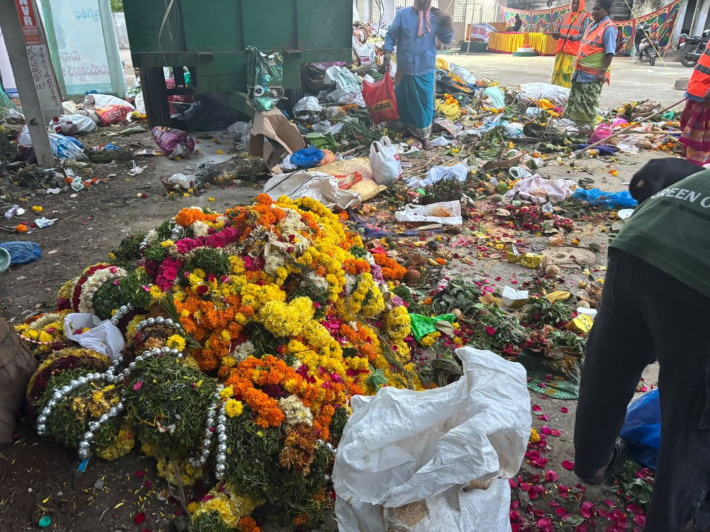
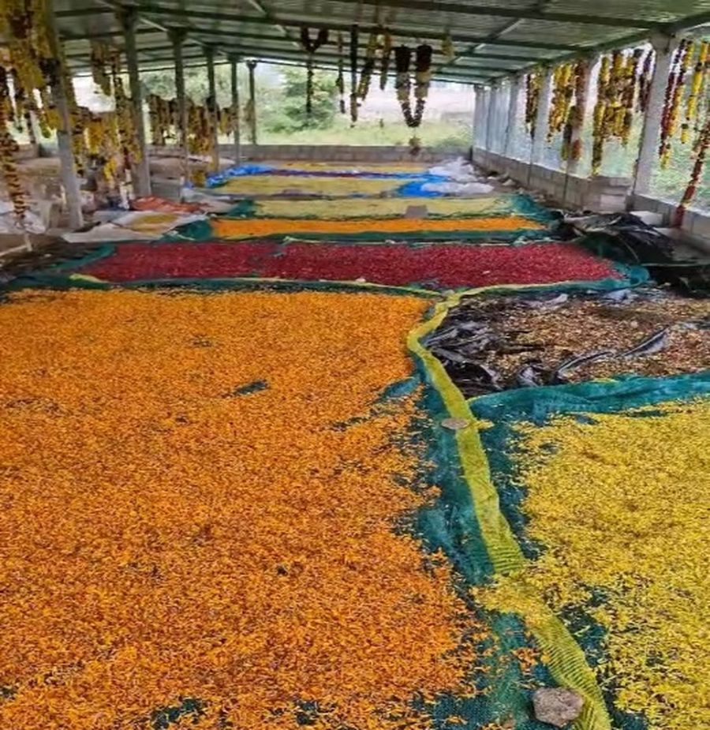
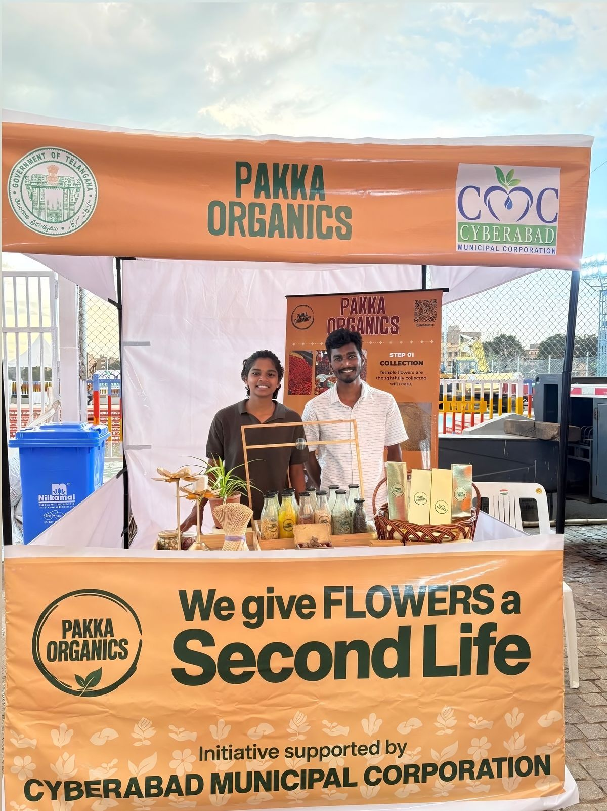
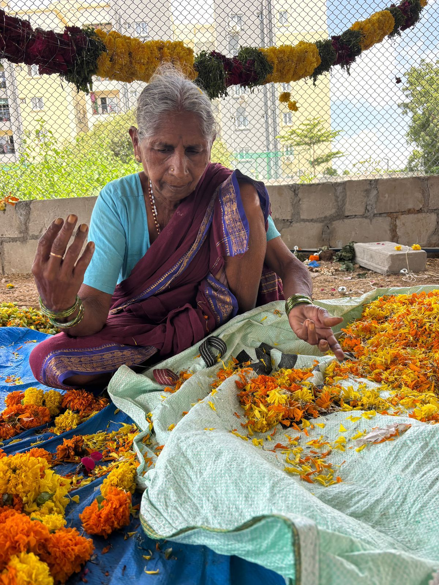
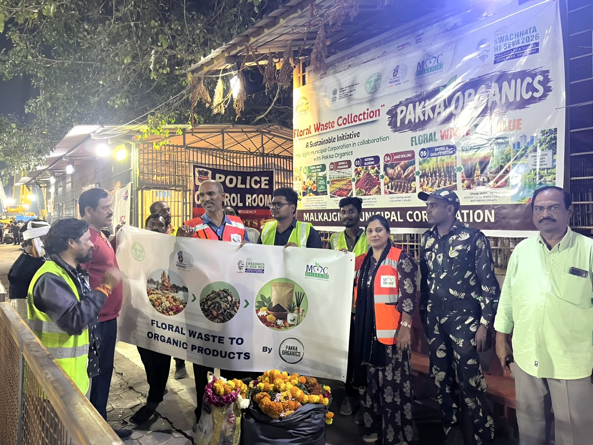
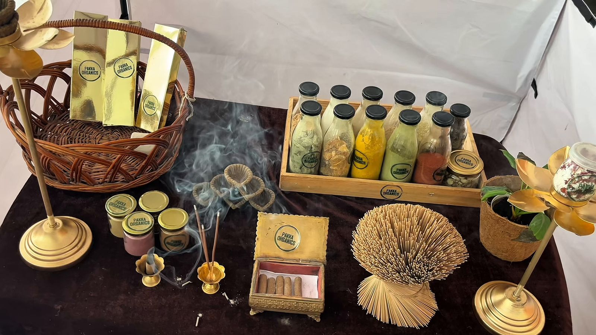

We give flowers a second life
Pakka Organics is a Hyderabad initiative that turns floral waste from religious ceremonies and Ganesh visarjan into products people can use in their own prayers.

Sacred flowers are becoming an environmental burden
Every day, tonnes of flowers offered in worship end their journey as waste. Left in lakes and dumps they rot, pollute the water and add to the load on the city's sanitation teams.
Temples, markets, events and parks all produce them. It is a steady stream of clean organic material that nobody was using.
Sources: Soundarya et al. (2021); GHMC-reported data, 2024.
A circular model, from floral waste to livelihoods
Floral waste is collected from municipal collection points, markets and temples. It is cleaned, segregated, dried and ground into a fine powder, which becomes chemical-free incense, dhoop and natural colours.
The flowers go back into worship, and the work of making them stays with local women.
Devotional. Sustainable. Livelihood.
See the five stepsOur journey since September 2025
-
September 2025
We start collecting
Pakka Organics begins collecting discarded flowers in Hyderabad and drying them to make incense.

Petals drying by type at our yard. -
Ganesh Chaturthi 2025
First immersion-lake collection
Floral waste is collected and recovered from the immersion lakes at Bachupally, Pragathinagar and IDL Lake.
-
Ganesh visarjan 2026
Collection kiosks with the municipal corporations
We run flower-collection kiosks at IDL Lake in Kukatpally, Saroornagar and Malkajgiri. Devotees hand over garlands before the idol goes for immersion.

Our kiosk at IDL Lake, Kukatpally, an initiative supported by Cyberabad Municipal Corporation. -
Today
19.8 tonnes of flowers recycled
And a growing range of incense, dhoop, bath care and puja products made in Hyderabad.
19.8tonnes of flowers recycled
Our impact so far
Every kilo is a flower that was collected, sorted and dried instead of being thrown away.
- September 2025when we started collecting
- 6 to 8 womenemployed and trained

Livelihoods for women
Local women and self-help groups are at the centre of this work. They are trained in collecting, segregating and processing floral waste, and in making the finished products.
Turning flowers into something of value gives them skills, income and a say in keeping their own neighbourhoods clean. Six to eight women work with us today.

Working with the city
The collection drives are run alongside Hyderabad's municipal corporations. The IDL Lake kiosk was supported by Cyberabad Municipal Corporation, and in Malkajgiri the floral waste collection was carried out with Malkajgiri Municipal Corporation.
For the 2026 immersion season, devotees across the city were asked to separate floral offerings before idol immersion, with dedicated collection points for flowers.
See the press coverage
What the flowers become
Recycled flowers are the raw material for our incense sticks, dhoop and natural colours.
Our incense is flower-based and charcoal-free. It is rolled by hand and made to be lit once and burn fully.
Have flowers to give?
If your temple, function hall or event has flowers after a ceremony, message us and we will tell you how to hand them over.